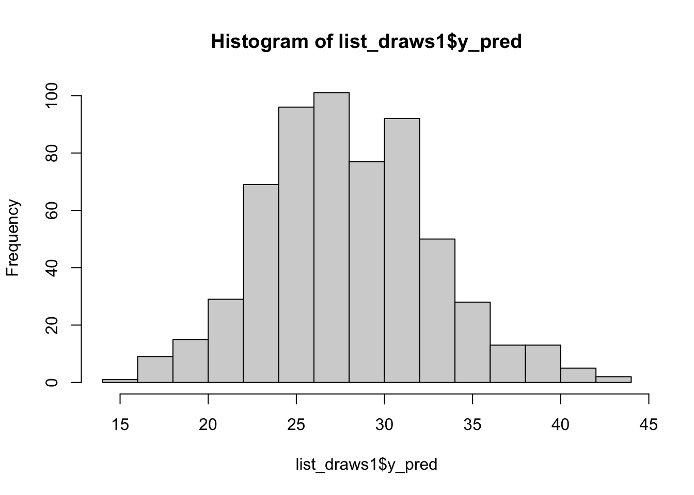
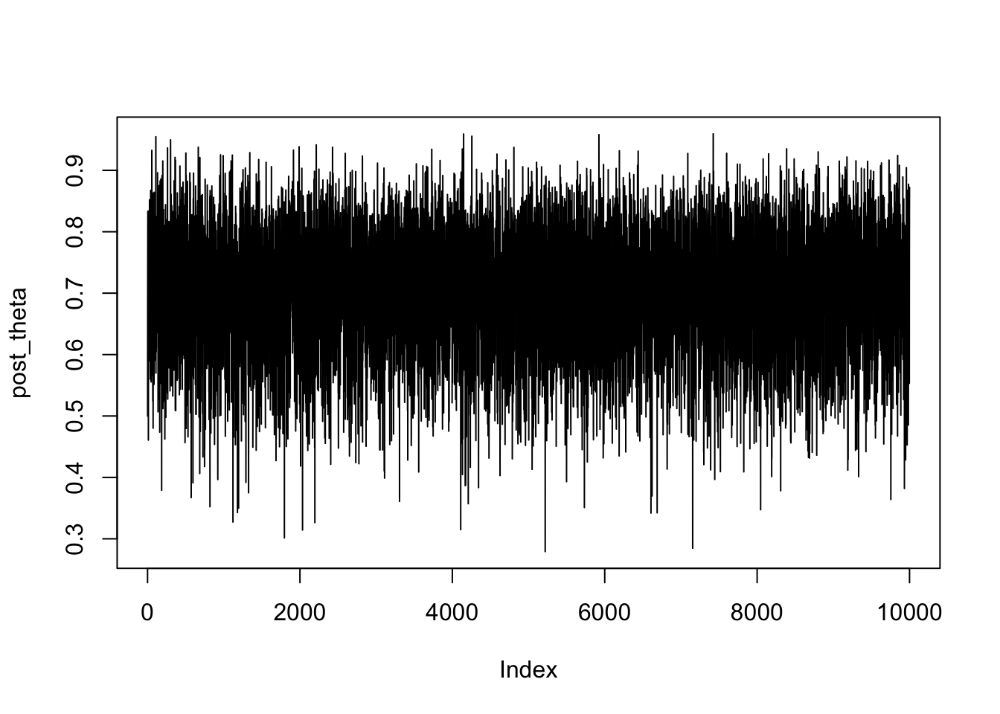
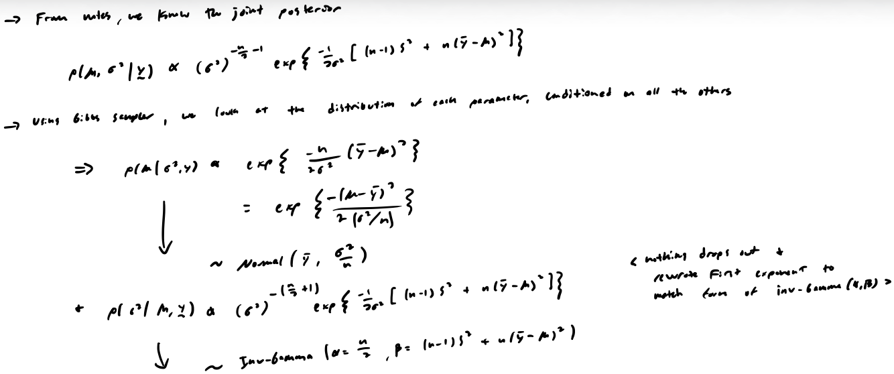
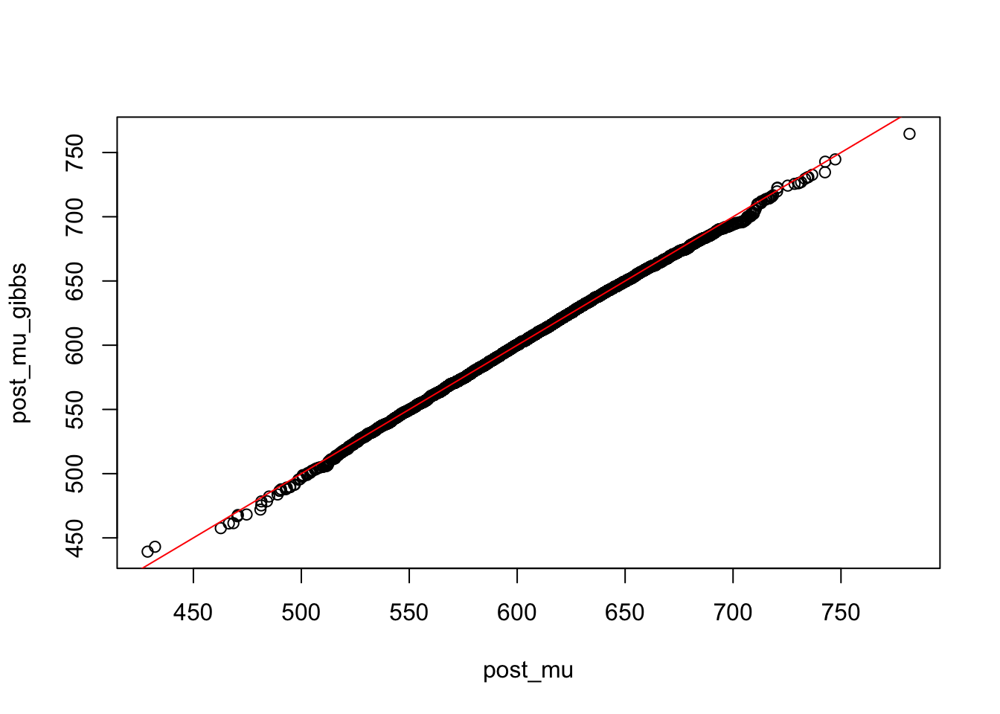
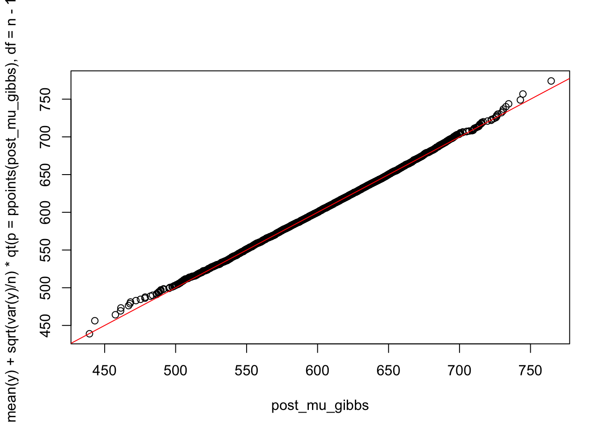
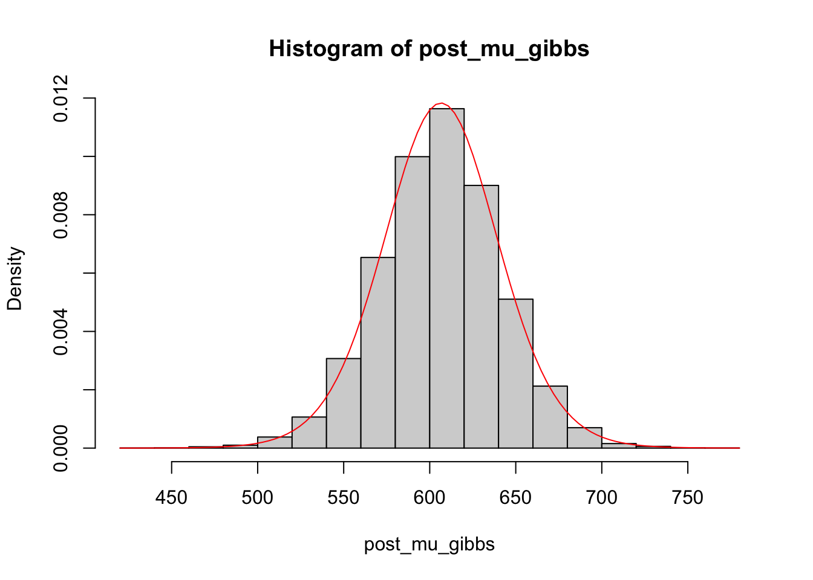

A “black-box” MCMC sampler, i.e., a software package that produces posterior samples numerically when you specify the likelihood and prior distributions; (other options: BUGS, JAGS, etc.)
Consider the following problem. There are 10 coins. For each coin, 100 tosses were done and the number of heads were recorded as follows.
[20, 30, 35, 18, 22, 29, 37, 31, 36, 24]
Here is the Stan code. For quarto, best practice is to specify the Stan code in a string and then wrap it in rstan::stan_model(). Then run the model with rstan::sampling(). Can have a display chunk if want to have the syntax highlighting.
data {int<lower=0> m; // number of coinsint<lower=0> n; // number of tossesint<lower=0> y[m]; // observations}parameters {real<lower=0, upper=1> p;}model { y ~ binomial(n, p); // data distribution p ~ beta(1, 1); // prior -> Beta (1,1) is equivalent to Uniform (0,1)}
# specify stand codestan_code1<-"data { int<lower=0> m; int<lower=0> n; int<lower=0> y[m];}parameters { real<lower=0, upper=1> p;}model { y ~ binomial(n, p); p ~ beta(1, 1);}"# save as modelstan_mod1<-rstan::stan_model(model_code =stan_code1)
Running /Library/Frameworks/R.framework/Resources/bin/R CMD SHLIB foo.c
using C compiler: ‘Apple clang version 17.0.0 (clang-1700.6.3.2)’
using SDK: ‘MacOSX26.2.sdk’
clang -arch arm64 -I"/Library/Frameworks/R.framework/Resources/include" -DNDEBUG -I"/Library/Frameworks/R.framework/Versions/4.6/Resources/library/Rcpp/include/" -I"/Library/Frameworks/R.framework/Versions/4.6/Resources/library/RcppEigen/include/" -I"/Library/Frameworks/R.framework/Versions/4.6/Resources/library/RcppEigen/include/unsupported" -I"/Library/Frameworks/R.framework/Versions/4.6/Resources/library/BH/include" -I"/Library/Frameworks/R.framework/Versions/4.6/Resources/library/StanHeaders/include/src/" -I"/Library/Frameworks/R.framework/Versions/4.6/Resources/library/StanHeaders/include/" -I"/Library/Frameworks/R.framework/Versions/4.6/Resources/library/RcppParallel/include/" -I"/Library/Frameworks/R.framework/Versions/4.6/Resources/library/rstan/include" -DEIGEN_NO_DEBUG -DBOOST_DISABLE_ASSERTS -DBOOST_PENDING_INTEGER_LOG2_HPP -DSTAN_THREADS -DUSE_STANC3 -DSTRICT_R_HEADERS -DBOOST_PHOENIX_NO_VARIADIC_EXPRESSION -D_HAS_AUTO_PTR_ETC=0 -include '/Library/Frameworks/R.framework/Versions/4.6/Resources/library/StanHeaders/include/stan/math/prim/fun/Eigen.hpp' -D_REENTRANT -DRCPP_PARALLEL_USE_TBB=1 -I/opt/R/arm64/include -fPIC -falign-functions=64 -Wall -g -O2 -c foo.c -o foo.o
In file included from <built-in>:1:
In file included from /Library/Frameworks/R.framework/Versions/4.6/Resources/library/StanHeaders/include/stan/math/prim/fun/Eigen.hpp:22:
In file included from /Library/Frameworks/R.framework/Versions/4.6/Resources/library/RcppEigen/include/Eigen/Dense:1:
In file included from /Library/Frameworks/R.framework/Versions/4.6/Resources/library/RcppEigen/include/Eigen/Core:19:
/Library/Frameworks/R.framework/Versions/4.6/Resources/library/RcppEigen/include/Eigen/src/Core/util/Macros.h:679:10: fatal error: 'cmath' file not found
679 | #include <cmath>
| ^~~~~~~
1 error generated.
make: *** [foo.o] Error 1
Now we can provide data to the specified Stan model and run it. Note that you must pass a list object with all needed information to rstan::sampling() function. Arguments of rstan::sampling():
chains = the number of chains to make (each corresponding to a different initial value).
Usually two chains is not enough to estimate \(\hat{R}\) well. Four or five chains is better.
warmup = the number of burn-in iterations.
iter = the number total number of iterations run (burn-in + keep ones).
# create data object to pass to Stan# -> it needs it as a listdata_stan1<-list(m =10, n =100, y =c(20, 30, 35, 18, 22, 29, 37, 31, 36, 24))# sampling from the posterior distributionsstan_fit1<-rstan::sampling(object =stan_mod1, data =data_stan1, seed =1, chains =2, warmup =200, iter =500)
Inference for Stan model: anon_model.
2 chains, each with iter=500; warmup=200; thin=1;
post-warmup draws per chain=300, total post-warmup draws=600.
mean se_mean sd 2.5% 25% 50% 75% 97.5% n_eff Rhat
p 0.28 0.00 0.01 0.26 0.27 0.28 0.29 0.31 228 1
lp__ -596.93 0.04 0.69 -598.63 -597.12 -596.68 -596.49 -596.43 384 1
Samples were drawn using NUTS(diag_e) at Mon Jun 8 14:41:06 2026.
For each parameter, n_eff is a crude measure of effective sample size,
and Rhat is the potential scale reduction factor on split chains (at
convergence, Rhat=1).
An equivalent way run a Stan model is to define the model in the .stan file and do mod_1 <- rstan::stan(file = <stan file>, data = <stan data>, <...>).
How stan actually works
Conceptual basics of Stan
We don’t write the sampler
In Gibbs sampler, we manually specifying how each parameter updates. e.g. we are thinking: “First sample for \(\sigma^2\) from its conditional. Then sample \(\mu\) given \(\sigma^2\).”
In Stan, we only specify the model (i.e. priors + likelihood); we never write updates.
Think in terms of the joint posterior
Stan targets \(p(\theta \mid \mathbf{y}) \propto p(\mathbf{y} \mid \theta) \cdot p(\theta)\), which is what we write by hand.
In Stan though, we only declare the pieces: data, parameters, priors and likelihood.
Stan handles the inference.
Parameters are sampled as a vector
Stan samples the full parameter vector jointly. Each iteration produces \(\mathbf{\theta}^{(t)} = (\mathbf{\theta}_1^{(t)}, \ldots, \mathbf{\theta}_p^{(t)})\) as one object, even if they are declared separately.
Because of this, dependencies between parameters are preserved automatically.
Stan works on the log posterior
Stan uses the \(\log\) to make calculations easier and it’s needed for the algorithm it runs.
When we code below following this model: \(Y \sim N(\mu, \sigma); \mu \sim N(0,10) \;\&\; \sigma \sim \text{cauchy}(0,5)\) (independent priors), Stan is actually accumulating \(\log p(\mu, \sigma^2 \mid \mathbf{y}) = \log p(\mathbf{y} \mid \mu, \sigma^2) + \log p(\mu) + \log p(\sigma^2)\)
model { mu ~ normal(0,10); sigma ~ cauchy(0,5); y ~ normal(mu, sigma);}
Note that “accumulating” is taken to mean:
target += log_density;
i.e. Stan keeps a running total of the log probability by adding each log-density contribution to an internal variable called target, which represents \(\log p(\theta \mid \mathbf{y})\). Stan builds this step by step.
Conceptually, think this:
Start at \(\text{target} = 0\)
Then when we write mu ~ normal(0, 10);\(\Rightarrow\) Stan translates it to target += normal_lpdf(mu | 0, 10);\(\Rightarrow\) Which means \(\text{target} \leftarrow \text{target} + \log p(\mu)\)
Repeat for \(\sigma\) and we have \(\text{target} = \log p(\mu) + \log p(\sigma)\)
Then if we write y ~ normal(mu, sigma);\(\Rightarrow\) Stan adds target += normal_lpdf(y | mu, sigma);\(\Rightarrow\) Now:
We are literally building the log joint posterior \(\log p(\mathbf{\theta} \mid \mathbf{y})\) (each line increases the target).
Dependent priors example
Continuing with the example from 4… If the prior for \(\mu\) is now \(\mu \sim N(0,\sigma)\), the only change in the model specification is in the prior line for \(\mu\).
model { sigma ~ cauchy(0,5); mu ~ normal(0, sigma); y ~ normal(mu, sigma);}
Easy as that; Stan automatically handles the dependency structure. Now it accumulates \(\log p(\sigma) + \log p(\mu \mid \sigma) + \log p(y \mid \mu, \sigma)\). So the joint posterior becomes \(p(\mu, \sigma \mid y) \propto p(y \mid \mu, \sigma) \, p(\mu \mid \sigma) \, p(\sigma)\).
# modify stan code to generate posterior predictions# specify stand codestan_code1<-"data { int<lower=0> m; int<lower=0> n; int<lower=0> y[m];}parameters { real<lower=0, upper=1> p;}model { y ~ binomial(n, p); p ~ beta(1, 1);}generated quantities{ real y_pred; y_pred = binomial_rng(n, p);}"# save, provide needed info, and run modelstan_mod1<-rstan::stan_model(model_code =stan_code1)
Running /Library/Frameworks/R.framework/Resources/bin/R CMD SHLIB foo.c
using C compiler: ‘Apple clang version 17.0.0 (clang-1700.6.3.2)’
using SDK: ‘MacOSX26.2.sdk’
clang -arch arm64 -I"/Library/Frameworks/R.framework/Resources/include" -DNDEBUG -I"/Library/Frameworks/R.framework/Versions/4.6/Resources/library/Rcpp/include/" -I"/Library/Frameworks/R.framework/Versions/4.6/Resources/library/RcppEigen/include/" -I"/Library/Frameworks/R.framework/Versions/4.6/Resources/library/RcppEigen/include/unsupported" -I"/Library/Frameworks/R.framework/Versions/4.6/Resources/library/BH/include" -I"/Library/Frameworks/R.framework/Versions/4.6/Resources/library/StanHeaders/include/src/" -I"/Library/Frameworks/R.framework/Versions/4.6/Resources/library/StanHeaders/include/" -I"/Library/Frameworks/R.framework/Versions/4.6/Resources/library/RcppParallel/include/" -I"/Library/Frameworks/R.framework/Versions/4.6/Resources/library/rstan/include" -DEIGEN_NO_DEBUG -DBOOST_DISABLE_ASSERTS -DBOOST_PENDING_INTEGER_LOG2_HPP -DSTAN_THREADS -DUSE_STANC3 -DSTRICT_R_HEADERS -DBOOST_PHOENIX_NO_VARIADIC_EXPRESSION -D_HAS_AUTO_PTR_ETC=0 -include '/Library/Frameworks/R.framework/Versions/4.6/Resources/library/StanHeaders/include/stan/math/prim/fun/Eigen.hpp' -D_REENTRANT -DRCPP_PARALLEL_USE_TBB=1 -I/opt/R/arm64/include -fPIC -falign-functions=64 -Wall -g -O2 -c foo.c -o foo.o
In file included from <built-in>:1:
In file included from /Library/Frameworks/R.framework/Versions/4.6/Resources/library/StanHeaders/include/stan/math/prim/fun/Eigen.hpp:22:
In file included from /Library/Frameworks/R.framework/Versions/4.6/Resources/library/RcppEigen/include/Eigen/Dense:1:
In file included from /Library/Frameworks/R.framework/Versions/4.6/Resources/library/RcppEigen/include/Eigen/Core:19:
/Library/Frameworks/R.framework/Versions/4.6/Resources/library/RcppEigen/include/Eigen/src/Core/util/Macros.h:679:10: fatal error: 'cmath' file not found
679 | #include <cmath>
| ^~~~~~~
1 error generated.
make: *** [foo.o] Error 1
data_stan1<-list(m =10, n =100, y =c(20, 30, 35, 18, 22, 29, 37, 31, 36, 24))stan_fit1<-rstan::sampling(object =stan_mod1, data =data_stan1, seed =1, chains =2, warmup =200, iter =500)
Inference for Stan model: anon_model.
2 chains, each with iter=500; warmup=200; thin=1;
post-warmup draws per chain=300, total post-warmup draws=600.
mean se_mean sd 2.5% 25% 50% 75% 97.5% n_eff Rhat
p 0.28 0.00 0.01 0.26 0.27 0.28 0.29 0.31 246 1
y_pred 28.46 0.19 4.83 20.00 25.00 28.00 32.00 39.00 646 1
lp__ -596.86 0.03 0.59 -598.52 -597.03 -596.64 -596.48 -596.43 287 1
Samples were drawn using NUTS(diag_e) at Mon Jun 8 14:41:21 2026.
For each parameter, n_eff is a crude measure of effective sample size,
and Rhat is the potential scale reduction factor on split chains (at
convergence, Rhat=1).
list_draws1<-rstan::extract(stan_fit1)hist(list_draws1$y_pred)# -> each y_pred represents the number of heads resulting from 100 flips of another coin

Summary: Things you need to make decisions about in a MCMC simulation
How many MCMC chains (chains)
How long each MCMC chain is (iterations = iter)
Random seed for random number generation (seed)
How many posterior samples will be discarded (burn-in = warmup)
Thinning (thin)
Example 2: Normal models with power prior
This example is for normal models with unknown \(\mu\) and \(\sigma^2\) (nuisance parameter). We also have historical data that we want to take into account. Here is the stan code.
data {int<lower=0> m; // sample size of historical dataint<lower=0> n; // sample size of current datareal y0[m]; // historical datareal y[n]; // current datareal<lower=0, upper=1> a0; // power of the historical information}parameters {real mu;real<lower=0> sigma2;}// see note 1model { y ~ normal(mu, sqrt(sigma2));target += a0 * normal_lpdf(y0 | mu, sqrt(sigma2)); // see note 2 mu ~ normal(25, 4); // initial prior sigma2 ~ inv_gamma(2,1);}
Notes:
We could also transform the parameters after declaring them as usual and then use the transformed version like usual.
If we want to specify a user supplied density function in the model, or we want to compute the (log) marginal likelihood for a stan model, we need to directly use the (log) density functions instead of using ~ signs for specifying distributions.
Now run the model.
# specify stand codestan_code2<-"data { int<lower=0> m; int<lower=0> n; real y0[m]; real y[n]; real<lower=0, upper=1> a0;}parameters { real mu; real<lower=0> sigma2;}model { y ~ normal(mu, sqrt(sigma2)); target += a0 * normal_lpdf(y0 | mu, sqrt(sigma2)); mu ~ normal(25, 4); sigma2 ~ inv_gamma(2,1);}"# save model, provide data and runstan_mod2<-rstan::stan_model(model_code =stan_code2)
Running /Library/Frameworks/R.framework/Resources/bin/R CMD SHLIB foo.c
using C compiler: ‘Apple clang version 17.0.0 (clang-1700.6.3.2)’
using SDK: ‘MacOSX26.2.sdk’
clang -arch arm64 -I"/Library/Frameworks/R.framework/Resources/include" -DNDEBUG -I"/Library/Frameworks/R.framework/Versions/4.6/Resources/library/Rcpp/include/" -I"/Library/Frameworks/R.framework/Versions/4.6/Resources/library/RcppEigen/include/" -I"/Library/Frameworks/R.framework/Versions/4.6/Resources/library/RcppEigen/include/unsupported" -I"/Library/Frameworks/R.framework/Versions/4.6/Resources/library/BH/include" -I"/Library/Frameworks/R.framework/Versions/4.6/Resources/library/StanHeaders/include/src/" -I"/Library/Frameworks/R.framework/Versions/4.6/Resources/library/StanHeaders/include/" -I"/Library/Frameworks/R.framework/Versions/4.6/Resources/library/RcppParallel/include/" -I"/Library/Frameworks/R.framework/Versions/4.6/Resources/library/rstan/include" -DEIGEN_NO_DEBUG -DBOOST_DISABLE_ASSERTS -DBOOST_PENDING_INTEGER_LOG2_HPP -DSTAN_THREADS -DUSE_STANC3 -DSTRICT_R_HEADERS -DBOOST_PHOENIX_NO_VARIADIC_EXPRESSION -D_HAS_AUTO_PTR_ETC=0 -include '/Library/Frameworks/R.framework/Versions/4.6/Resources/library/StanHeaders/include/stan/math/prim/fun/Eigen.hpp' -D_REENTRANT -DRCPP_PARALLEL_USE_TBB=1 -I/opt/R/arm64/include -fPIC -falign-functions=64 -Wall -g -O2 -c foo.c -o foo.o
In file included from <built-in>:1:
In file included from /Library/Frameworks/R.framework/Versions/4.6/Resources/library/StanHeaders/include/stan/math/prim/fun/Eigen.hpp:22:
In file included from /Library/Frameworks/R.framework/Versions/4.6/Resources/library/RcppEigen/include/Eigen/Dense:1:
In file included from /Library/Frameworks/R.framework/Versions/4.6/Resources/library/RcppEigen/include/Eigen/Core:19:
/Library/Frameworks/R.framework/Versions/4.6/Resources/library/RcppEigen/include/Eigen/src/Core/util/Macros.h:679:10: fatal error: 'cmath' file not found
679 | #include <cmath>
| ^~~~~~~
1 error generated.
make: *** [foo.o] Error 1
m<-20n<-80data_stan2<-list(m, n, a0 =0.5, # power of historical information y0 =rnorm(n =m, mean =20, sd =1), y =rnorm(n =n, mean =20, sd =1))stan_fit2<-rstan::sampling(object =stan_mod2, data =data_stan2, seed =1, chains =2, warmup =200, iter =500)
Recall, target is the log of the joint posterior density, which can be written as \(p(\mathbf{\theta} \mid \mathbf{y}) \propto p(\mathbf{y} \mid \mathbf{\theta}) \cdot \pi(\mathbf{\theta})\).
If we were to do normal models and non-informative prior instead, \(\mathbf{\theta} = (\mu, \sigma^2)\)
Then the data distribution \(\log{p(\mathbf{y} \mid \mu, \sigma^2)}\) is specified through y ~ normal(mu, sqrt(sigma2)) (this version of the specification is used in the example above), which is equivalent to target += normal_lpdf(y | mu, sqrt(sigma2)).
But for the prior \(\log{\pi(\mu, \theta)}\), since \(\pi(\mu, \sigma^2) \propto (\sigma^2)^{-1}\), we cannot use distributions to specify this. However, we know that \(\log{\pi(\mu, \sigma^2)} = -\log{\sigma^2}\).
Thus, the prior is specified by adding to target: target += -log(sigma2).
Simulation of \(\sigma^2\) from the inverse gamma distribution (note that an inverse gamma random variable can be expressed as the reciprocal of a gamma random variable with the same shape and rate parameters. Alternatively, you can use invgamma::rigamma()).
Simulation of \(\mu\) from the normal distribution
# initialize itemsm<-1000# sample from marginal posterior for sigma^2 given ypost_sigma2<-1/rgamma(n =m, shape =(n-1)/2, rate =(n-1)*s2/2)# sample from conditional posterior for mu given sigma^2 and ypost_mu<-rnorm(n =m, mean =y_bar, sd =sqrt(post_sigma2/n))# plot the distributionshist(post_sigma2)
Use the same two-step process to simulate from the posterior distribution using \(µ_0 = 20\), \(\kappa_0 = 0.01\), \(\alpha = 0.1\) and \(\beta = 10\). Report the marginal posterior median, mean, credible intervals for \(\mu\) and \(\sigma^2\). Draw the posterior distribution of \((\mu,\sigma^2)\).
# initialize itemsm<-1000alpha_0<-0.1beta<-10mu_0<-20k_0<-0.01# sample from marginal posterior for sigma^2 given yalpha_post<-n/2+alpha_0beta_post<-(n-1)*s2/2+n*k_0/(2*(k_0+n))*(mu_0-y_bar)^2+betapost_sigma2_conj<-invgamma::rinvgamma(n =m, shape =alpha_post, rate =beta_post)# calculate posterior distribution meanmu_n<-(n*y_bar+k_0*mu_0)/(n+k_0)# sample from conditional posterior for mu given sigma^2 and ypost_mu_conj<-rnorm(n =m, mean =mu_n, sd =sqrt(post_sigma2_conj/(n+k_0)))# point estimatesc("med sigma2"=median(post_sigma2_conj), "mean sigma2"=mean(post_sigma2_conj), "med mu"=median(post_mu_conj), "mean mu"=mean(post_mu_conj))
med sigma2 mean sigma2 med mu mean mu
15.38430 18.41405 22.74235 22.78612
How can we implement the Bayesian model to obtain the posterior samples of \(\theta_1,\ldots,\theta_J\)?
One prior
Just using some selected values for \(\mathbf{\alpha} = (3,2,1)\).
IMPORTANT NOTE: Because of the conjugate prior, we know that the posteriors for \(\mathbf{\theta}\) will also follow Dirichlet distribution, just with updated parameters.
# set prior parametersalphas<-c(3,2,1)# calculate posterior parameterspost_params<-y+alphas# calculate exact posterior mean for each of theta1, theta2, theta3(post_theta_means<-post_params/sum(post_params))
[1] 0.61111111 0.30555556 0.08333333
# Monte Carlo simulationpost_thetas<-gtools::rdirichlet(n =10000, alpha =post_params)# approximate posterior means for each of theta1, theta2, theta3post_thetas%>%data.frame%>%map_dbl(\(col)mean(col))
X1 X2 X3
0.61075606 0.30590793 0.08333602
# approximate posterior medians and 95% credible intervals for each of theta1, theta2, theta3post_thetas%>%data.frame%>%map(\(col)quantile(col, probs =c(0.025,0.50,0.975)))
# set prior parametersalphas_unif<-c(1,1,1)# calculate posterior parameterspost_params_unif<-y+alphas# calculate exact posterior mean for each of theta1, theta2, theta3(post_theta_means_unif<-post_params_unif/sum(post_params_unif))
[1] 0.61111111 0.30555556 0.08333333
# Monte Carlo simulationpost_thetas_unif<-gtools::rdirichlet(n =10000, alpha =post_params_unif)# approximate posterior means for each of theta1, theta2, theta3post_thetas_unif%>%data.frame%>%map_dbl(\(col)mean(col))
X1 X2 X3
0.61176138 0.30496805 0.08327058
# approximate posterior medians and 95% credible intervals for each of theta1, theta2, theta3post_thetas_unif%>%data.frame%>%map(\(col)quantile(col, probs =c(0.025,0.50,0.975)))
# set prior parameters# NOTE: increasing alpha's in prior distribution gives stronger prior inputalphas_strong<-c(1,1,1)# calculate posterior parameterspost_params_strong<-y+alphas# calculate exact posterior mean for each of theta1, theta2, theta3(post_theta_means_strong<-post_params_strong/sum(post_params_strong))
[1] 0.61111111 0.30555556 0.08333333
# Monte Carlo simulationpost_thetas_strong<-gtools::rdirichlet(n =10000, alpha =post_params_strong)# approximate posterior means for each of theta1, theta2, theta3post_thetas_strong%>%data.frame%>%map_dbl(\(col)mean(col))
X1 X2 X3
0.61214853 0.30462715 0.08322432
# approximate posterior medians and 95% credible intervals for each of theta1, theta2, theta3post_thetas_strong%>%data.frame%>%map(\(col)quantile(col, probs =c(0.025,0.50,0.975)))
Experiment; Suppose that a coin is tossed 20 times, but Chloe only recorded the first 19 outcomes: \(\{1,1,1,1,1,0,1,1,1,1,0,1,1,0,1,1,0,0,1\}\)
Data:
\(X_1, X_2, \ldots, X_{19}\) taking on values of 1 (head) or 0 (tail), \(X_{20}\) is missing.
\(X_i \sim \text{Bernoulli}(\theta)\)
Parameter of interest: \(\theta\).
We can use Gibbs sampler to find posterior distribution of both \(\theta\) and \(X_{20}\)!
# obsersved data# Observed datax<-c(1,1,1,1,1,0,1,1,1,1,0,1,1,0,1,1,0,0,1)y<-sum(x)# initialize itemsm<-10000m_burn_in<-5000post_theta<-c()post_x20<-c()# Gibbs sampler!# -> set initial values of p and X20post_theta[1]<-0.5post_x20[1]<-1# add values to the chainfor(iin2:m){# derived in previous notespost_theta[i]<-rbeta(n =1, shape1 =y+post_x20[i-1], shape2 =20-y-post_x20[i-1]+1)post_x20[i]<-rbinom(n =1, size =1, prob =post_theta[i])}# time series plot of the Markov Chain path for "p"plot(post_theta, type ='l')

# display and summarize kept valueshist(post_theta[(m_burn_in+1):m])
Use Rstan to build the model and obtain the posterior distribution of \(\mu\) and \(\sigma^2\). Draw histograms for each parameter. Obtain the posterior predictive distribution for a future observation. Draw a histogram.
# specify stand codestan_code<-"data { int<lower=0> n; real y[n];}parameters { real mu; real<lower=0> sigma2;}model { y ~ normal(mu, sqrt(sigma2)); target += -log(sigma2);}generated quantities { real y_pred; y_pred = normal_rng(mu, sqrt(sigma2));}"# save model, provide data and runstan_mod<-rstan::stan_model(model_code =stan_code)
Running /Library/Frameworks/R.framework/Resources/bin/R CMD SHLIB foo.c
using C compiler: ‘Apple clang version 17.0.0 (clang-1700.6.3.2)’
using SDK: ‘MacOSX26.2.sdk’
clang -arch arm64 -I"/Library/Frameworks/R.framework/Resources/include" -DNDEBUG -I"/Library/Frameworks/R.framework/Versions/4.6/Resources/library/Rcpp/include/" -I"/Library/Frameworks/R.framework/Versions/4.6/Resources/library/RcppEigen/include/" -I"/Library/Frameworks/R.framework/Versions/4.6/Resources/library/RcppEigen/include/unsupported" -I"/Library/Frameworks/R.framework/Versions/4.6/Resources/library/BH/include" -I"/Library/Frameworks/R.framework/Versions/4.6/Resources/library/StanHeaders/include/src/" -I"/Library/Frameworks/R.framework/Versions/4.6/Resources/library/StanHeaders/include/" -I"/Library/Frameworks/R.framework/Versions/4.6/Resources/library/RcppParallel/include/" -I"/Library/Frameworks/R.framework/Versions/4.6/Resources/library/rstan/include" -DEIGEN_NO_DEBUG -DBOOST_DISABLE_ASSERTS -DBOOST_PENDING_INTEGER_LOG2_HPP -DSTAN_THREADS -DUSE_STANC3 -DSTRICT_R_HEADERS -DBOOST_PHOENIX_NO_VARIADIC_EXPRESSION -D_HAS_AUTO_PTR_ETC=0 -include '/Library/Frameworks/R.framework/Versions/4.6/Resources/library/StanHeaders/include/stan/math/prim/fun/Eigen.hpp' -D_REENTRANT -DRCPP_PARALLEL_USE_TBB=1 -I/opt/R/arm64/include -fPIC -falign-functions=64 -Wall -g -O2 -c foo.c -o foo.o
In file included from <built-in>:1:
In file included from /Library/Frameworks/R.framework/Versions/4.6/Resources/library/StanHeaders/include/stan/math/prim/fun/Eigen.hpp:22:
In file included from /Library/Frameworks/R.framework/Versions/4.6/Resources/library/RcppEigen/include/Eigen/Dense:1:
In file included from /Library/Frameworks/R.framework/Versions/4.6/Resources/library/RcppEigen/include/Eigen/Core:19:
/Library/Frameworks/R.framework/Versions/4.6/Resources/library/RcppEigen/include/Eigen/src/Core/util/Macros.h:679:10: fatal error: 'cmath' file not found
679 | #include <cmath>
| ^~~~~~~
1 error generated.
make: *** [foo.o] Error 1
data_stan<-list(n =length(y), y =y)stan_fit<-rstan::sampling(object =stan_mod, data =data_stan, seed =1, chains =2, warmup =5000, iter =10000)
Inference for Stan model: anon_model.
2 chains, each with iter=10000; warmup=5000; thin=1;
post-warmup draws per chain=5000, total post-warmup draws=10000.
mean se_mean sd 2.5% 25% 50% 75% 97.5% n_eff Rhat
mu 19.87 0.00 0.47 18.93 19.56 19.87 20.18 20.78 9311 1
sigma2 21.94 0.03 3.19 16.46 19.72 21.66 23.82 29.03 8515 1
y_pred 19.78 0.05 4.74 10.43 16.63 19.74 22.92 29.25 9701 1
lp__ -203.71 0.01 1.00 -206.42 -204.10 -203.41 -202.98 -202.72 4778 1
Samples were drawn using NUTS(diag_e) at Mon Jun 8 14:41:53 2026.
For each parameter, n_eff is a crude measure of effective sample size,
and Rhat is the potential scale reduction factor on split chains (at
convergence, Rhat=1).
# save and visualize resultslist_draws<-rstan::extract(stan_fit)hist(list_draws$mu)
Water pollution has been an important environmental concern. A chemistry lab has been helping EPA with the water quality monitoring lab work in the past month. The concentration of a toxic chemical was measured for the water samples they received from EPA and the records are given below (unit: mg/L):
The lab manager believes that these measures are from a normal population, but he is not sure about the mean or variance of such a population.
Part a
Consider a Bayesian analysis of the data, if the noninformative prior, i.e. \(p(\mu,\sigma^2) \propto \frac{1}{\sigma^2}\), is used, what is the joint posterior distribution of \(\mu\) and \(\sigma^2\)? Please use simulation approach (MC) to obtain independent samples from the posterior distribution, and draw density curves or histogram that describes the marginal posterior density for each parameter. Describe the center, spread, skewness, outliers existing or not for the posterior distributions.
As shown on page 2 of the notes above, we have the following posterior distributions for \(\mu\) and \(\sigma^2\), respectively:
\(\mu\): Unimodal and symmetric distribution (roughly normal) centered at \(\bar{y} \approx 606\) with a st dev \(\approx\) 35.
\(\sigma\): Right skewed distribution (mean \(\approx\) 147.5, median \(\approx\) 144.8) with a st dev \(\approx\) 27.6. Contains high outliers.
Part b
Please find the 95% credible interval for \(\mu\) and \(\sigma^2\) respectively.
From above, we know that the posterior distribution for \(\mu\) is bell-shaped, so an equal-tails interval will be optimal. However for \(\sigma^2\), a HPD interval will be better because of the skewness.
# credible intervals of parametersquantile(post_mu, probs =c(0.025, 0.975))
These water samples are from the Acton Reservoir in Ohio. EPA published a criteria that the average concentration of this chemical should be below 650 mg/L. What is the probability that the average concentration is below 650 based on the Bayesian analysis you carried out (Use the posterior samples in (a))?
To find this probability, we can simply use our posterior sample for \(\mu\).
If the lab receives a new water sample this month, what is the probability that the concentration measured for this new sample is below 650 based on the Bayesian analysis you carried out (Use MC approach, that is to use the samples in (a))?
To find this probability, we must predict new observations using our posterior samples for \(\mu\) and \(\sigma^2\).
# generate new observations using posterior samplesy_pred<-rnorm(n =m, mean =post_mu, sd =post_sigma2%>%sqrt)# calculate desired probabilitymean(y_pred<650)
[1] 0.6202
Part e
Use Gibbs sampler (not Rstan) to draw samples from the posterior distribution. Draw the density curves or histograms for \(\mu\) and \(\sigma^2\). Based on the posterior samples, repeat (d).

# initialize results vectors with initial values alreadypost_mu_gibbs<-c(600)post_sigma2_gibbs<-c(100)# generate dependent draws from the conditional posterior distributions using gibbs sampler# -> NOTE: make sure to ALWAYS be using the most updated information for each parameter (i.e. once mu[i+1] is generated, use it for sigma2[i+1])# --> because of this dependency structure, the initial value of mu is never really used...for(iin1:(m-1)){post_mu_gibbs[i+1]<-rnorm(n =1, mean =mean(y), sd =sqrt(post_sigma2_gibbs[i]/n))post_sigma2_gibbs[i+1]<-invgamma::rinvgamma(n =1, shape =n/2, rate =((n-1)*var(y)+n*(mean(y)-post_mu_gibbs[i+1])^2)/2)}# generate new observations using posterior samplesy_pred_gibbs<-rnorm(n =m, mean =post_mu_gibbs, sd =post_sigma2_gibbs%>%sqrt)# calculate desired probabilitymean(y_pred_gibbs<650)
[1] 0.6162
Verify that using gibbs sampler resulted in a sample from the desired posterior distributions.
So, we know the theoretical results for this example. With Gibbs sampler, we sampled from the conditional posterior distributions in such a way that we were able to obtain samples from the marginal posteriors for both parameters. We already have the marginal posterior for \(\sigma^2\), but for \(\mu\), we need to integrate out \(\sigma^2\). < skipping the steps >. The result of this is:
Note that this is not the standard \(t\)-distribution. Here, it has a location and scale parameter. The location parameter shifts the entire distribution, and the scale parameter stretches / compresses the distribution (i.e. controlling how much it is spread around the center). These are completely different than the non-centrality parameter, which introduces asymmetry (in short).
# BEST way to compare distributions is with a qqplot (just doing for mu...)# -> first compare gibbs results to MC methodsqqplot(post_mu, post_mu_gibbs)abline(0, 1, col ="red")

# -> now compare to marginal posterior (location-scale t-dist)# -> ppoints(< vec >) just generates length(vec) probabilities between 0 and 1 (i.e. P(X < quantile) = ppoints[i])qqplot(post_mu_gibbs, mean(y)+sqrt(var(y)/n)*qt(p =ppoints(post_mu_gibbs), df =n-1))abline(0, 1, col ="red")

# can also confirm by overlaying marginal posterior curve to gibbs sampler resultshist(post_mu_gibbs, freq =FALSE)curve(dt((x-mean(y))/sqrt(var(y)/n), df =n-1)/sqrt(var(y)/n), col ="red", add =TRUE)

Note that extra steps in the qt() line are to take into account the location-scale aspect. qt() returns quantiles of the standard \(t\)-dist (i.e. y-values), so we just do this: \(\mu = \bar{y} + \sqrt(\frac{\sigma^2}{n}) \, T\).
Same idea for using dt(), now we have to transform the density function. i.e. if \(X \sim t_{n-1}(0,1)\) and \(Y = \frac{X - a}{b}\) (where \(a\) = location parameter, \(b\) = scale parameter), then \(f_Y(y) = \frac{1}{b}f_X(\frac{x - a}{b})\).
Part f
Use Rstan to build the model and repeat (d).
Recall in the model statement here:
We ONLY specify the data distribution and the prior distribution(s), nothing else.
We have a non-informative prior (i.e doesn’t have a normal \(\mu\) for a prior). So we have to add this manually to the target, which is already the log of the posterior.
data {int<lower=0> n;real y[n];}parameters {real mu;real<lower=0> sigma2;}model { y ~ normal(mu, sqrt(sigma2)); // data distributiontarget += -1 * log(sigma2); // add the information from our noninformative prior}generated quantities{real y_pred; y_pred = normal_rng(mu, sqrt(sigma2));}
# specify stand codestan_code<-"data { int<lower=0> n; real y[n];}parameters { real mu; real<lower=0> sigma2;}model { y ~ normal(mu, sqrt(sigma2)); target += -1 * log(sigma2);}generated quantities{ real y_pred; y_pred = normal_rng(mu, sqrt(sigma2));}"# save, provide needed info, and run modelstan_mod<-rstan::stan_model(model_code =stan_code)
Running /Library/Frameworks/R.framework/Resources/bin/R CMD SHLIB foo.c
using C compiler: ‘Apple clang version 17.0.0 (clang-1700.6.3.2)’
using SDK: ‘MacOSX26.2.sdk’
clang -arch arm64 -I"/Library/Frameworks/R.framework/Resources/include" -DNDEBUG -I"/Library/Frameworks/R.framework/Versions/4.6/Resources/library/Rcpp/include/" -I"/Library/Frameworks/R.framework/Versions/4.6/Resources/library/RcppEigen/include/" -I"/Library/Frameworks/R.framework/Versions/4.6/Resources/library/RcppEigen/include/unsupported" -I"/Library/Frameworks/R.framework/Versions/4.6/Resources/library/BH/include" -I"/Library/Frameworks/R.framework/Versions/4.6/Resources/library/StanHeaders/include/src/" -I"/Library/Frameworks/R.framework/Versions/4.6/Resources/library/StanHeaders/include/" -I"/Library/Frameworks/R.framework/Versions/4.6/Resources/library/RcppParallel/include/" -I"/Library/Frameworks/R.framework/Versions/4.6/Resources/library/rstan/include" -DEIGEN_NO_DEBUG -DBOOST_DISABLE_ASSERTS -DBOOST_PENDING_INTEGER_LOG2_HPP -DSTAN_THREADS -DUSE_STANC3 -DSTRICT_R_HEADERS -DBOOST_PHOENIX_NO_VARIADIC_EXPRESSION -D_HAS_AUTO_PTR_ETC=0 -include '/Library/Frameworks/R.framework/Versions/4.6/Resources/library/StanHeaders/include/stan/math/prim/fun/Eigen.hpp' -D_REENTRANT -DRCPP_PARALLEL_USE_TBB=1 -I/opt/R/arm64/include -fPIC -falign-functions=64 -Wall -g -O2 -c foo.c -o foo.o
In file included from <built-in>:1:
In file included from /Library/Frameworks/R.framework/Versions/4.6/Resources/library/StanHeaders/include/stan/math/prim/fun/Eigen.hpp:22:
In file included from /Library/Frameworks/R.framework/Versions/4.6/Resources/library/RcppEigen/include/Eigen/Dense:1:
In file included from /Library/Frameworks/R.framework/Versions/4.6/Resources/library/RcppEigen/include/Eigen/Core:19:
/Library/Frameworks/R.framework/Versions/4.6/Resources/library/RcppEigen/include/Eigen/src/Core/util/Macros.h:679:10: fatal error: 'cmath' file not found
679 | #include <cmath>
| ^~~~~~~
1 error generated.
make: *** [foo.o] Error 1
data_stan<-list(n =length(y), y =y)stan_fit<-rstan::sampling(object =stan_mod, data =data_stan, seed =1, chains =2, warmup =200, iter =10000)
Inference for Stan model: anon_model.
2 chains, each with iter=10000; warmup=200; thin=1;
post-warmup draws per chain=9800, total post-warmup draws=19600.
mean se_mean sd 2.5% 25% 50% 75% 97.5%
mu 606.52 0.30 35.60 536.44 583.17 606.19 629.67 677.75
sigma2 22598.70 92.08 8846.23 11358.49 16560.35 20771.44 26419.97 44989.20
y_pred 606.10 1.14 154.65 294.67 506.26 605.71 705.80 912.50
lp__ -98.62 0.01 1.06 -101.44 -99.02 -98.29 -97.86 -97.58
n_eff Rhat
mu 14379 1
sigma2 9230 1
y_pred 18256 1
lp__ 7932 1
Samples were drawn using NUTS(diag_e) at Mon Jun 8 14:42:09 2026.
For each parameter, n_eff is a crude measure of effective sample size,
and Rhat is the potential scale reduction factor on split chains (at
convergence, Rhat=1).